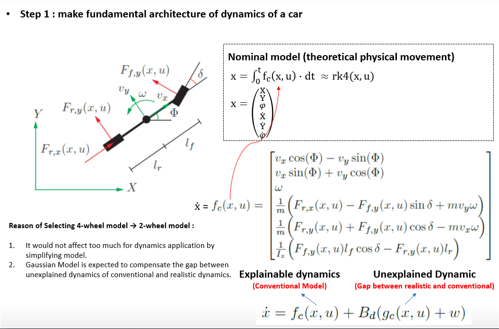
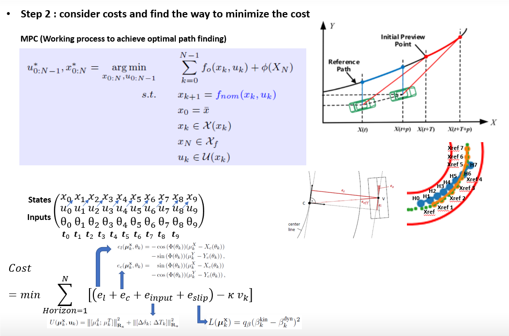
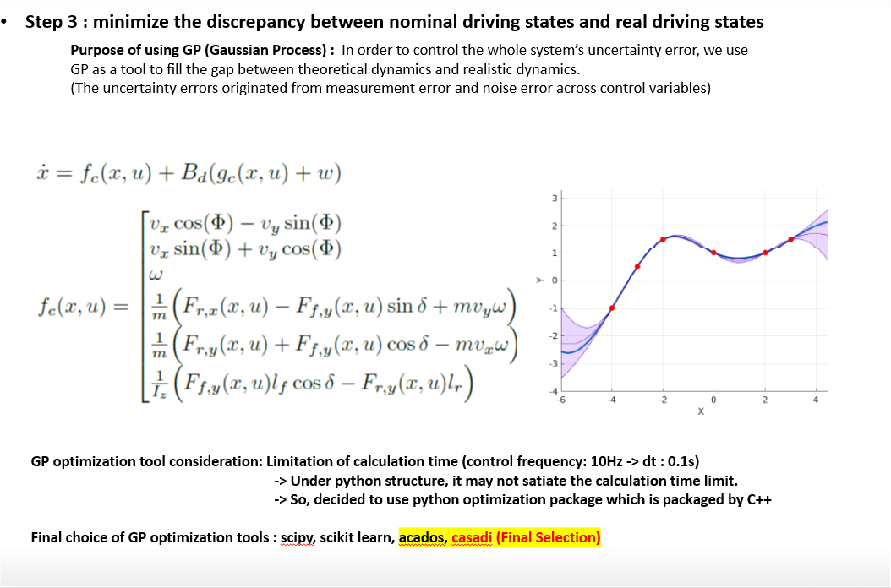
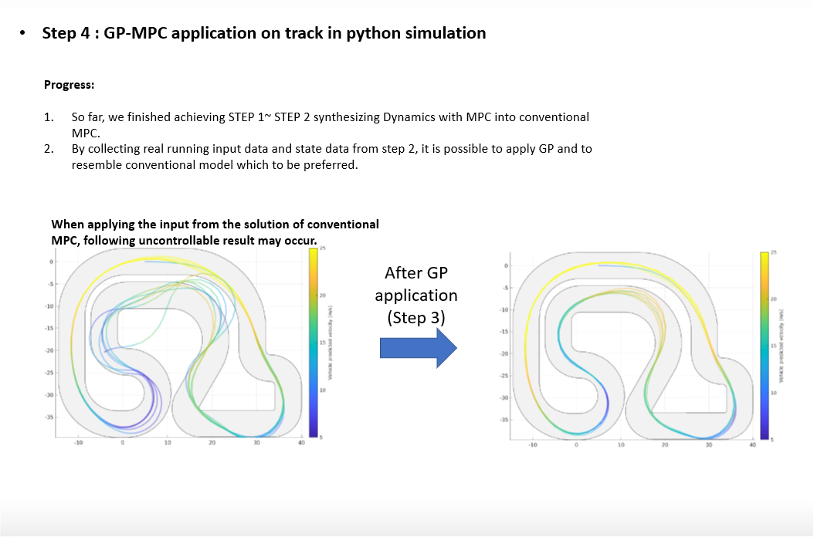

// Project Detail — Hancom InSpace Co., Ltd. · Feb 2021 – Dec 2021
MPC + Gaussian Process
Path Planning
Adaptive autonomous path planning combining Model Predictive Control with Gaussian Process regression — enabling a ground robot to navigate complex tracks with real-time obstacle-aware trajectory optimization.
// 01 · System Overview
Full Simulation Result
The system combines MPC for short-horizon trajectory optimization with Gaussian Process (GP) regression to model and predict terrain or path uncertainty. The GP component learns a probabilistic model of the path from prior experience, providing uncertainty estimates that allow the MPC to plan more conservative or aggressive trajectories depending on confidence level.
The full pipeline was implemented and validated in Gazebo simulation with a differential-drive ground robot navigating a structured track environment.
Full simulation result — MPC+GP path planning on autonomous ground robot navigating a structured track.
// 02 · Algorithm Step 1
Track Environment & Problem Setup
The first step defines the navigation environment: a structured track with boundaries and a reference centerline. The robot must stay within track limits while following the centerline as closely as possible. The reference path is sampled at discrete waypoints to form the MPC's tracking target over the prediction horizon.

Step 1 — track environment definition with reference centerline and boundary constraints.
// 03 · Algorithm Step 2
Gaussian Process Path Modeling
A Gaussian Process is fitted to the reference path to provide a smooth, continuous, and probabilistic representation of the desired trajectory. The GP outputs both a mean prediction (expected path position) and a variance estimate (uncertainty) at any query point — enabling the MPC to account for path modeling error in its optimization.

Step 2 — GP regression on reference path, showing mean prediction and confidence interval (±2σ).
// 04 · Algorithm Step 3
MPC Trajectory Optimization
The MPC formulates a finite-horizon optimal control problem at each timestep: given the robot's current state, minimize a cost function that penalizes deviation from the GP mean path while satisfying track boundary constraints. The optimization is solved in real time using a nonlinear solver, producing a sequence of control inputs of which only the first is applied (receding horizon principle).

Step 3 — MPC optimization result showing predicted trajectory over the planning horizon against GP reference.
// 05 · Algorithm Step 4
Closed-Loop Execution & Result
The closed-loop system runs the MPC+GP pipeline at each control cycle: the robot's measured state is fed back to the optimizer, the GP provides updated path predictions at the robot's current position, and the MPC recomputes optimal control inputs. The result is smooth, stable track following that adapts to the robot's actual position even under disturbances.

Step 4 — closed-loop execution result: actual robot trajectory (cyan) vs GP reference path across the full track.